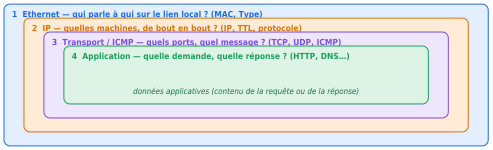
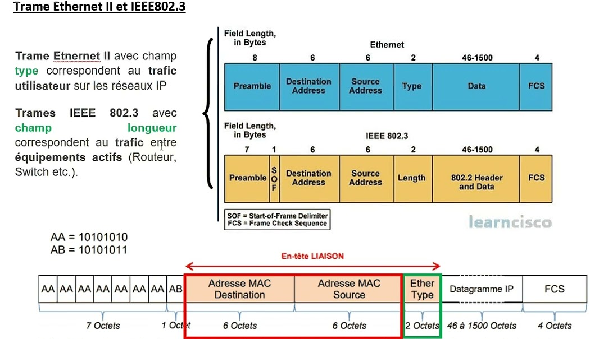
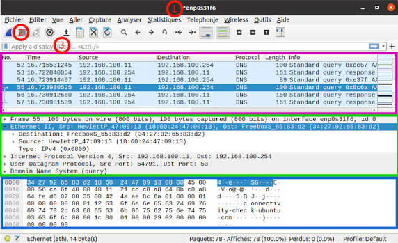
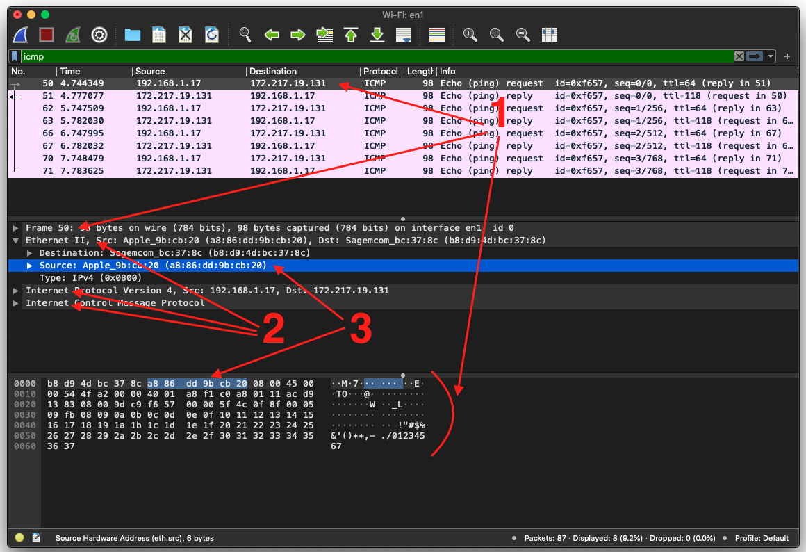
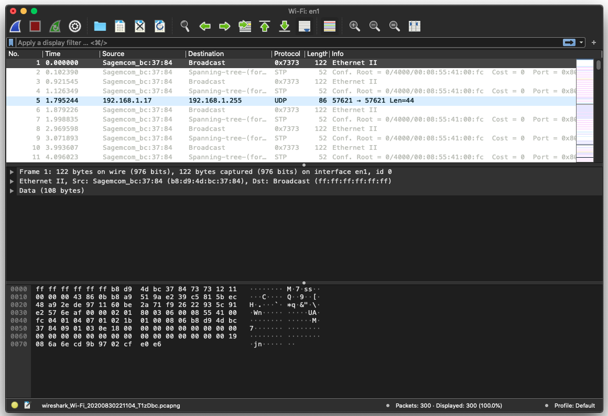
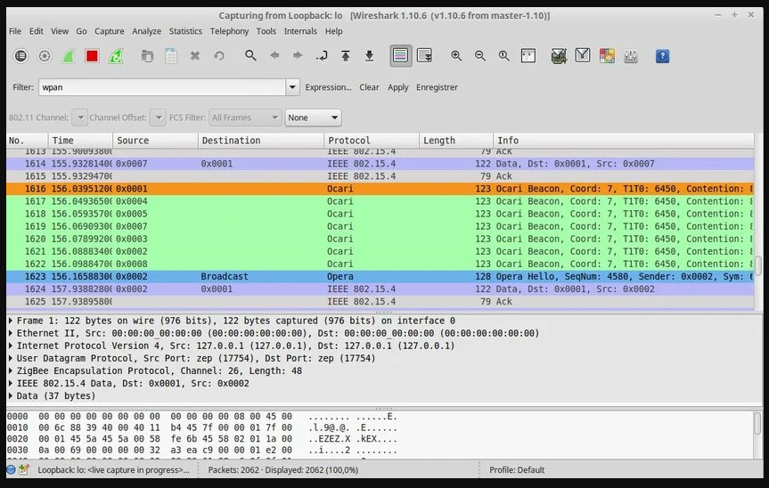
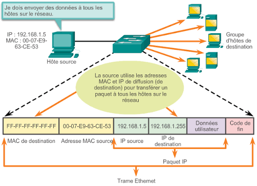

Partie 2 — Mode d'emploi : lire une trame dans Wireshark
Savoir lire une trame couche par couche, vérifier les champs dans les octets bruts et formuler une conclusion limitée à ce que l'observation démontre.
2.1 Le principe : lire de l'extérieur vers l'intérieur
Une trame est une succession d'enveloppes emboîtées, comme des poupées russes. On la lit de l'extérieur vers l'intérieur :

À chaque niveau, un champ indique quel protocole vient ensuite : le champ Type d'Ethernet (0x0800 = IPv4), le champ Protocol d'IPv4 (1 = ICMP, 6 = TCP, 17 = UDP). C'est ce chaînage que Wireshark utilise pour décoder.
2.2 Anatomie d'une trame Ethernet II

| Champ | Taille | Rôle |
|---|---|---|
| Préambule | 7 octets | Synchronisation de l'horloge du récepteur (AA AA AA AA AA AA AA) |
| SFD (début de trame) | 1 octet | Délimiteur AB : le contenu commence juste après |
| Adresse MAC destination | 6 octets | Qui doit recevoir la trame sur le lien local |
| Adresse MAC source | 6 octets | Qui l'a émise |
| Type (EtherType) | 2 octets | Protocole transporté (voir tableau ci-dessous) |
| Données (charge utile) | 46 à 1500 octets | Le paquet IP, ou autre |
| FCS | 4 octets | Contrôle d'erreur (CRC) de la trame |
| EtherType | Protocole transporté |
|---|---|
0x0800 | IPv4 |
0x0806 | ARP (résolution adresse IP → adresse MAC) |
0x86DD | IPv6 |
0x8100 | VLAN 802.1Q (étiquette de VLAN) |
- Wireshark n'affiche généralement ni le préambule, ni le SFD, ni le FCS : la carte réseau les traite et les retire. Une trame visible comprend donc 14 octets d'en-tête (6 + 6 + 2) plus la charge utile.
- La charge utile maximale est de 1500 octets (le MTU Ethernet) : une trame vue dans Wireshark fait au maximum 1514 octets (14 + 1500).
- La taille minimale d'une trame sur le câble est de 64 octets avec FCS. Si les données sont trop courtes, l'émetteur ajoute du bourrage (padding) : on peut voir de petites trames complétées par des zéros.
- Ethernet II utilise le champ de 2 octets comme Type (valeur ≥
0x0600). IEEE 802.3 l'utilise comme Longueur (valeur ≤ 1500). Sur les réseaux IP on rencontre presque toujours Ethernet II ; le champ Longueur apparaît notamment dans les trames STP.
Les 14 premiers octets d'une trame se lisent toujours de la même façon : 6 octets de destination, 6 octets de source, 2 octets de type.
2.3 Anatomie d'un paquet IPv4
La charge utile de la trame Ethernet est un paquet IPv4. Son en-tête fait 20 octets sans options.
| Octets | Champ | Rôle |
|---|---|---|
| 0 | Version (4 bits) + IHL (4 bits) | Version = 4 ; IHL = longueur de l'en-tête en mots de 4 octets (5 → 20 octets). D'où l'octet 45 |
| 1 | DSCP / ECN | Priorité de service (souvent 00) |
| 2–3 | Longueur totale | En-tête + données IP, en octets |
| 4–5 | Identification | Identifiant du paquet (utile en fragmentation) |
| 6–7 | Drapeaux + décalage de fragment | Gestion de la fragmentation (00 00 ou 40 00 = ne pas fragmenter) |
| 8 | TTL | Durée de vie : décrémentée à chaque routeur, le paquet est détruit à 0 |
| 9 | Protocole | Protocole suivant : 01 ICMP, 06 TCP, 11 UDP (17 en décimal) |
| 10–11 | Somme de contrôle de l'en-tête | Détection d'erreurs dans l'en-tête |
| 12–15 | Adresse IP source | Qui a émis le paquet |
| 16–19 | Adresse IP destination | À qui il est destiné |
Durée de vie d'un paquet, décrémentée à chaque routeur traversé. Valeurs initiales courantes : 64 (Linux, macOS), 128 (Windows), 255 (certains équipements réseau). Un TTL de 118 reçu en réponse suggère une valeur initiale de 128 diminuée de 10 sauts : c'est une hypothèse raisonnable, pas une preuve du système d'exploitation distant.
2.4 Les zones de l'interface Wireshark

| Zone | Rôle | Remarque |
|---|---|---|
| Barre de menus | Fichier, Éditer, Vue, Aller, Capture, Analyser, Statistiques… | Capture → Options pour choisir l'interface |
| Barre d'outils | Démarrer (aileron bleu), arrêter (carré rouge), redémarrer, ouvrir, enregistrer, rechercher | Le carré rouge n'est actif que pendant une capture |
| Barre de filtre d'affichage | Saisie d'un filtre qui masque les paquets non concernés | Fond vert : filtre valide ; rouge : erreur de syntaxe ; jaune : valide mais à vérifier |
| ① Liste des paquets | Une ligne par paquet : No., Time, Source, Destination, Protocol, Length, Info | Vue d'ensemble : c'est ici que l'on sélectionne un paquet |
| ② Détail des protocoles | Le paquet décomposé couche par couche (Frame, Ethernet II, IPv4, TCP/UDP/ICMP, application) | Chaque ligne se déplie avec la flèche ▸ |
| ③ Octets bruts | Contenu hexadécimal (gauche) et texte ASCII (droite) | Les octets d'un champ sélectionné en ② sont surlignés |
| Barre d'état | Nom du champ sélectionné, nombre de paquets capturés / affichés / perdus, profil | Packets: 87 · Displayed: 8 (9,2%) : le filtre a retenu 8 paquets sur 87 |
Cliquez sur un champ dans la zone ② (par exemple Source dans Ethernet II) et les 6 octets correspondants se surlignent dans la zone ③ ; la barre d'état affiche « Source Hardware Address (eth.src), 6 bytes ». C'est la fonction la plus utile pour comprendre comment les champs sont codés.
Les couleurs
Wireshark colore les lignes selon des règles (menu Vue → Règles de coloration). Les couleurs ne sont pas une preuve : elles aident à repérer des familles de trafic (ICMP en rose pâle, TCP en violet clair, HTTP en vert, UDP en bleu pâle, erreurs en noir/rouge dans le profil par défaut).
Les colonnes de la liste des paquets
| Colonne | Signification |
|---|---|
| No. | Numéro d'ordre dans la capture. Pas dans le paquet lui-même |
| Time | Secondes écoulées depuis le début de la capture (modifiable : Vue → Format d'affichage de l'heure) |
| Source / Destination | Adresses du niveau le plus élevé connu : IP, sinon MAC |
| Protocol | Protocole le plus haut reconnu dans la trame |
| Length | Taille de la trame capturée, en octets (14 octets d'en-tête Ethernet inclus) |
| Info | Résumé produit par Wireshark : requête, réponse, ports, numéros de séquence… |
2.5 La méthode en 10 étapes
- Appliquer un filtre d'affichage adapté (
icmp,dns,http,ip.addr == …) pour réduire le bruit. - Lire la liste des paquets : repérer le sens (qui parle à qui), le protocole, la taille et le résumé.
- Sélectionner un paquet et vérifier dans la barre d'état le nombre d'octets.
- Dérouler Frame : numéro de trame, taille sur le fil, taille capturée, interface. Informations sur la capture, pas des champs de la trame.
- Dérouler Ethernet II : MAC de destination, MAC de source, Type.
- Dérouler Internet Protocol : IP source, IP destination, TTL, protocole suivant, longueur totale.
- Dérouler la couche transport : TCP (ports, drapeaux, numéros de séquence), UDP (ports, longueur) ou ICMP (type, code).
- Dérouler la couche application si elle existe (HTTP, DNS…).
- Vérifier dans les octets bruts que les champs importants sont bien ceux annoncés (cliquer sur un champ et observer le surlignage).
- Formuler une conclusion limitée à ce que l'observation démontre : distinguer faits, hypothèses et recommandations.
Lire les couleurs ou la colonne Info comme une preuve. La colonne Info est un résumé calculé par Wireshark ; la vérité se trouve dans les champs des couches et dans les octets.
2.6 Cas n°1 — Lire un ping (ICMP), octet par octet

ÉTAPE ALa liste des paquets (zone 1)
Le filtre icmp affiche 8 paquets sur 87 capturés (barre d'état : Displayed: 8 (9,2%)).
No. Time(s) Source Destination Info 50 4,744349 192.168.1.17 172.217.19.131 Echo (ping) request id=0xf657 seq=0/0 ttl=64 51 4,777077 172.217.19.131 192.168.1.17 Echo (ping) reply id=0xf657 seq=0/0 ttl=118 62 5,747509 192.168.1.17 172.217.19.131 request seq=1/256 ttl=64 63 5,782030 172.217.19.131 192.168.1.17 reply seq=1/256 ttl=118
- Les requêtes sont envoyées environ une par seconde (4,74 s ; 5,74 s ; 6,74 s ; 7,74 s) : rythme par défaut de
ping. - Chaque requête a sa réponse : Wireshark les relie (
reply in 51,request in 50). - Le délai aller-retour (RTT) de la première paire se calcule par différence : 4,777077 − 4,744349 = 0,032728 s, soit environ 32,7 ms.
- L'identifiant (
0xf657) est identique pour tout le ping : il identifie la commandepingqui a émis ces requêtes. Le numéro de séquence augmente de 1 à chaque requête. - Pourquoi
seq=1/256? Le champ occupe 2 octets (00 01). Wireshark l'affiche en gros-boutiste (big-endian : 1) puis en petit-boutiste (little-endian :0x0100= 256). Seule la première valeur est conventionnelle ici. - Le TTL passe de 64 (requête) à 118 (réponse) : deux machines différentes émettent, avec des valeurs initiales différentes.
ÉTAPE BLe détail des couches (zone 2) pour le paquet 50
| Ligne Wireshark | Information lue |
|---|---|
Frame 50: 98 bytes on wire (784 bits), 98 bytes captured … interface en1 | Taille 98 octets = 784 bits (98 × 8). Interface de capture : en1 (Wi-Fi sur macOS) |
Ethernet II, Src: Apple_9b:cb:20 (a8:86:dd:9b:cb:20), Dst: Sagemcom_bc:37:8c (b8:d9:4d:bc:37:8c) | Source : un Mac. Destination : la box (Sagemcom), et non Google |
Type: IPv4 (0x0800) | La charge utile est un paquet IPv4 |
Internet Protocol Version 4, Src: 192.168.1.17, Dst: 172.217.19.131 | Machine locale → serveur distant |
Internet Control Message Protocol | Type 8 (Echo request), code 0 |
Parce que 172.217.19.131 n'est pas sur le réseau local. La trame va jusqu'au routeur, qui la reconstruit pour le saut suivant. L'adresse IP reste, elle, celle du serveur final.
ÉTAPE CLes octets bruts (zone 3) : décodage complet
La colonne de gauche (0000, 0010…) est le décalage (offset) en hexadécimal du premier octet de la ligne ; chaque ligne contient 16 octets. Les champs sont colorés ci-dessous selon la légende.
0000 b8 d9 4d bc 37 8c a8 86 dd 9b cb 20 08 00 45 00 0010 00 54 4f a2 00 00 40 01 a8 f1 c0 a8 01 11 ac d9 0020 13 83 08 00 9d c9 f6 57 00 00 5f 4c 0f 8f 00 05 0030 09 fb 08 09 0a 0b 0c 0d 0e 0f 10 11 12 13 14 15 0040 16 17 18 19 1a 1b 1c 1d 1e 1f 20 21 22 23 24 25 0050 26 27 28 29 2a 2b 2c 2d 2e 2f 30 31 32 33 34 35 0060 36 37 MAC destination MAC source EtherType IPv4 en-tête IPv4 TTL / type ICMP protocole IP source IP destination identifiant ICMP n° de séquence
| Décalage | Octets | Champ | Valeur décodée |
|---|---|---|---|
| 0x00–0x05 | b8 d9 4d bc 37 8c | MAC destination | b8:d9:4d:bc:37:8c (la box) |
| 0x06–0x0b | a8 86 dd 9b cb 20 | MAC source | a8:86:dd:9b:cb:20 (le Mac) |
| 0x0c–0x0d | 08 00 | Type Ethernet | IPv4 |
| 0x0e | 45 | Version + IHL | Version 4 ; IHL 5 → en-tête de 5 × 4 = 20 octets |
| 0x0f | 00 | DSCP/ECN | Pas de classe de service particulière |
| 0x10–0x11 | 00 54 | Longueur totale IP | 0x0054 = 84 octets |
| 0x12–0x13 | 4f a2 | Identification IP | 0x4fa2 |
| 0x14–0x15 | 00 00 | Drapeaux / fragment | Non fragmenté |
| 0x16 | 40 | TTL | 0x40 = 64 |
| 0x17 | 01 | Protocole | 1 = ICMP |
| 0x18–0x19 | a8 f1 | Somme de contrôle IP | Contrôle de l'en-tête |
| 0x1a–0x1d | c0 a8 01 11 | IP source | 192.168.1.17 |
| 0x1e–0x21 | ac d9 13 83 | IP destination | 172.217.19.131 |
| 0x22 | 08 | Type ICMP | 8 = Echo request |
| 0x23 | 00 | Code ICMP | 0 |
| 0x24–0x25 | 9d c9 | Somme de contrôle ICMP | Contrôle du message ICMP |
| 0x26–0x27 | f6 57 | Identifiant | 0xf657 |
| 0x28–0x29 | 00 00 | Numéro de séquence | 0 |
| 0x2a–0x31 | 5f 4c 0f 8f 00 05 09 fb | Horodatage | 8 octets (valeur dépendant de l'émetteur) |
| 0x32–0x61 | 08 09 … 36 37 | Données de remplissage | 48 octets : suite croissante 0x08 à 0x37 |
L'en-tête ICMP fait 8 octets, la charge utile 56 (8 + 48), soit 64 octets ICMP. En ajoutant l'en-tête IP de 20 octets : 84 octets, la longueur totale IP 00 54. En ajoutant les 14 octets Ethernet : 98 octets, soit la valeur de Frame 50. Tout est cohérent.
c0 = 12 × 16 + 0 = 192 ; a8 = 10 × 16 + 8 = 168 ; 01 = 1 ; 11 = 1 × 16 + 1 = 17 → 192.168.1.17. De même ac d9 13 83 donne 172.217.19.131.
La colonne ASCII (à droite) n'est pas un second contenu : c'est la même suite d'octets, rendue en caractères lorsque c'est possible, avec un point pour les octets non imprimables. Ici les octets 0x20 à 0x37 s'affichent !"#$%&'()*+,-./01234567 : c'est le remplissage standard du ping, il ne contient pas de message.
ÉTAPE DConclusion
L'hôte 192.168.1.17 a envoyé des requêtes ICMP Echo à 172.217.19.131 et a reçu des réponses ; le délai aller-retour est d'environ 33 ms.
Que le serveur web de cette adresse fonctionne (le ping ne teste que l'ICMP), que l'hôte distant est vulnérable, ou qu'il tourne sous tel système d'exploitation (le TTL ne donne qu'une indication).
2.7 Cas n°2 — Diffusions et trames inconnues

Cette capture n'a pas de filtre : les paquets de toutes sortes se mélangent. C'est la situation réelle à laquelle vous serez confrontés.
La première ligne. Paquet 1, 122 octets : Source Sagemcom_bc:37:84, Destination Broadcast, colonne Protocol 0x7373, Info Ethernet II. Dans le détail, Wireshark n'affiche que trois lignes : Frame, Ethernet II et Data (108 bytes).
- La destination
ff:ff:ff:ff:ff:ff(visible au début des octets) est l'adresse de diffusion. - Le champ Type vaut
0x7373. Ce n'est pas un EtherType courant : Wireshark n'a pas de décodeur pour lui, il affiche donc le reste en « Data ». 122 − 14 = 108 octets de données : le calcul est exact. - La source est un équipement Sagemcom (la box) ; son adresse
…:37:84est voisine de celle vue sur la capture du ping (…:37:8c), ce qui suggère une autre interface de la même box. C'est une hypothèse.
Qu'une trame d'un type inconnu est une attaque. De nombreux équipements réseau émettent des trames propriétaires de gestion ou de découverte. L'observation correcte est : « trame de diffusion de type non décodé émise par la box ».
Les trames STP (52 octets, destination Spanning-tree-(for-bridges)). STP (Spanning Tree Protocol) sert aux commutateurs à éviter les boucles réseau. Info : Conf. Root = 0/4000/00:08:55:41:00:fc Cost = 0 Port = 0x80…. Ces trames utilisent le champ Longueur d'IEEE 802.3 et non un EtherType, ce qui illustre la figure 1.
Le paquet 5 (surbrillance bleue) : 192.168.1.17 → 192.168.1.255, UDP, 57621 → 57621 Len=44, 86 octets.
- Adresse IP destination
.255: diffusion IP du réseau192.168.1.0/24. - Vérification de la taille : 14 (Ethernet) + 20 (IPv4) + 8 (UDP) + 44 (données) = 86.
- Port UDP 57621 : souvent associé à la découverte d'appareils sur le réseau local par certaines applications de streaming musical. C'est une indication, pas une preuve : seule l'analyse du contenu ou du processus émetteur permettrait de l'affirmer.
2.8 Cas n°3 — Lire une requête DNS (UDP)
Sur la figure 2 (capture en français, interface enp0s31f6), on lit :
| Zone | Contenu |
|---|---|
| Liste | Paquets 53 à 57 : Standard query et Standard query response entre 192.168.100.11 et 192.168.100.254 |
| Frame 55 | 100 octets (800 bits) |
| Ethernet II | Source HewlettP_47:09:13 (18:60:24:47:09:13), destination FreeboxS_65:83:d2 (34:27:92:65:83:d2), type IPv4 0x0800 |
| IPv4 | 192.168.100.11 → 192.168.100.254 |
| UDP | Port source 54791, port destination 53 |
| DNS (query) | Demande de résolution |
- Le port destination 53 identifie le service DNS. Le port source 54791 est un port éphémère choisi par le système client pour cette requête ; il change à chaque demande.
- Dans les octets,
34 27 92 65 83 d2 | 18 60 24 47 09 13 | 08 00 | 45 00: même structure que pour le ping (MAC destination, MAC source, EtherType IPv4, début de l'en-tête IP). - La colonne ASCII laisse lire
ity-check.ubuntu.com. Dans un message DNS, chaque étiquette du nom est précédée de sa longueur ; les points affichés remplacent ces octets de longueur. Le nom complet estconnectivity-check.ubuntu.com, requête habituelle de vérification de connectivité. - Vérification de la taille : 100 − 14 − 20 − 8 = 58 octets DNS. En-tête DNS 12 + nom 31 + type et classe 4 = 47 ; les 11 octets restants correspondent typiquement à un enregistrement d'option EDNS0. Hypothèse cohérente avec le calcul.
- Le serveur DNS est ici la passerelle (
.254), qui est aussi le destinataire de la trame : l'IP et la MAC de destination désignent le même équipement, car il est sur le réseau local.
Pour 172.217.19.131, la MAC de destination est celle de la box mais l'IP est distante ; pour le DNS local, MAC et IP désignent le même appareil.
Que l'utilisateur de la machine a « visité » un site parce qu'un nom a été résolu. Beaucoup de résolutions sont émises automatiquement par le système.
2.9 Cas n°4 — Des encapsulations plus profondes

Cette capture montre que l'empilement des couches n'est pas toujours Ethernet → IP → TCP :
Frame 1 : 122 octets (interface 0, "lo") └─ Ethernet II : 00:00:00:00:00:00 → 00:00:00:00:00:00 └─ IPv4 : 127.0.0.1 → 127.0.0.1 └─ UDP : port 17754 → port 17754 (ZEP) └─ ZigBee Encapsulation Protocol : canal 26, longueur 48 └─ IEEE 802.15.4 Data : 0x0002 → 0x0001 └─ Data : 37 octets
- Sur l'interface de bouclage
lo, les adresses MAC sont toutes à zéro et les adresses IP sont127.0.0.1: le trafic ne quitte pas la machine. - Le protocole ZEP encapsule des trames de réseau de capteurs radio (IEEE 802.15.4) dans de l'UDP. Un simulateur peut ainsi envoyer des trames radio via le réseau local.
- La colonne Protocol montre le protocole le plus profond reconnu (
Ocari,Opera,IEEE 802.15.4). Dans les octets, les 12 premiers octets00…sont les deux MAC, puis08 00annonce IPv4 et45 00ouvre l'en-tête IP.
La méthode reste la même, quelle que soit la profondeur de l'empilement : on descend couche par couche en suivant le champ qui annonce le protocole suivant.
2.10 Cas n°5 — La diffusion expliquée par un schéma

| Zone de la trame | Valeur du schéma |
|---|---|
| MAC destination | FF-FF-FF-FF-FF-FF |
| MAC source | 00-07-E9-63-CE-53 |
| IP source | 192.168.1.5 |
| IP destination | 192.168.1.255 |
| Données utilisateur | Contenu applicatif |
| Code de fin | Contrôle d'erreur (FCS) |
Le paquet IP (IP source, IP destination, données) est enfermé dans la trame Ethernet (MAC destination, MAC source, paquet IP, FCS). Le commutateur, recevant une trame dont la MAC destination est FF-FF-FF-FF-FF-FF, la copie vers tous ses ports (sauf celui d'entrée). C'est exactement ce que l'on a vu avec le paquet 5 de la figure 4.
2.11 Convertir : hexadécimal, décimal, binaire
| Hexa | Décimal | Binaire |
|---|---|---|
0a | 10 | 00001010 |
11 | 17 | 00010001 |
40 | 64 | 01000000 |
a8 | 168 | 10101000 |
c0 | 192 | 11000000 |
ff | 255 | 11111111 |
Méthode : un octet = deux chiffres hexadécimaux. Premier chiffre × 16 + second chiffre, avec a = 10, b = 11, c = 12, d = 13, e = 14, f = 15.
0x0054= 0 × 4096 + 0 × 256 + 5 × 16 + 4 = 84.0x0800= 8 × 256 = 2048 (EtherType IPv4).0x0600= 6 × 256 = 1536 : seuil entre Longueur (≤ 1500) et Type (≥ 1536).
2.12 Les filtres Wireshark
Deux familles à ne pas confondre
| Type | Où se saisit-il ? | Effet | Syntaxe |
|---|---|---|---|
| Filtre de capture | Avant de démarrer (Capture → Options) | N'enregistre que les paquets correspondants | BPF : host 192.168.56.20, port 3000 |
| Filtre d'affichage | Barre de filtre | Masque les autres paquets sans les supprimer | Wireshark : ip.addr == 192.168.56.20 |
| Objectif | Filtre d'affichage |
|---|---|
| Voir uniquement le ping | icmp |
| Requêtes ping seulement | icmp.type == 8 |
| Tout trafic d'une machine | ip.addr == 192.168.1.17 |
| Trafic d'une adresse MAC | eth.addr == a8:86:dd:9b:cb:20 |
| Diffusions Ethernet | eth.dst == ff:ff:ff:ff:ff:ff |
| Trafic vers le port 3000 | tcp.port == 3000 |
| Requêtes DNS | dns ou udp.port == 53 |
| Requêtes HTTP GET | http.request.method == "GET" |
| Début de connexions TCP | tcp.flags.syn == 1 && tcp.flags.ack == 0 |
| Connexions refusées | tcp.flags.reset == 1 |
| Gros paquets | frame.len > 1000 |
| Exclure l'ARP | !arp |
Opérateurs : == égal, != différent, && et, || ou, ! non. Le fond de la barre devient vert si la syntaxe est valide, rouge sinon.
2.13 Les erreurs d'interprétation les plus fréquentes
- Confondre MAC et IP : la MAC change à chaque saut, l'IP reste celle de bout en bout.
- Croire que la taille Wireshark inclut le FCS : en général non.
- Prendre la colonne Info pour une preuve : elle résume ; les champs et octets font foi.
- Conclure sur le système distant d'après le TTL : indication faible.
- Prendre un protocole inconnu pour une attaque : « inconnu de Wireshark » ne signifie pas « malveillant ».
- Oublier le filtre actif : la barre d'état indique combien de paquets sont masqués.
- Capturer sur la mauvaise interface : aucun paquet attendu n'apparaît.
- Confondre filtre de capture et d'affichage : un mauvais filtre de capture perd définitivement des paquets.
- Lire du texte dans l'ASCII et y voir un secret : des octets de remplissage peuvent être imprimables.
- Déduire une compromission d'un simple échange : un ping, une diffusion ou une requête DNS ne démontrent pas une faille.
2.14 Fiche de lecture d'une trame (à recopier)
| Champ à renseigner | Valeur relevée |
|---|---|
| Fichier de capture, interface, filtre actif | |
| N° du paquet, heure relative | |
| Taille (Frame) et vérification arithmétique | |
| MAC source / destination (et fabricants) | |
| EtherType | |
| IP source / destination, TTL, protocole | |
| Transport : ports (TCP/UDP) ou type/code (ICMP) | |
| Application : requête ou réponse | |
| Octets vérifiés (décalages) | |
| Fait démontré | |
| Hypothèse (à vérifier) | |
| Ce que l'on ne peut pas conclure |
2.15 Exercices de lecture de trames
Exercice 1. Dans le dump du ping, que désignent les octets ac d9 13 83 ?
Exercice 2. La longueur totale IP est 00 54. Que vaut-elle en décimal, et comment retrouver les 98 octets du Frame ?
Exercice 3. Paquet 5 de la figure 4 : vérifier la taille de 86 octets et expliquer pourquoi la MAC destination est ff:ff:ff:ff:ff:ff.
Exercice 4. Paquet 55 de la figure 2 : quel est le port du serveur, quel est celui du client, et que désigne connectivity-check.ubuntu.com ?
Exercice 5. Calculer le délai aller-retour entre les paquets 62 et 63 (figure 3).
Exercice 6. Un collègue affirme : « le TTL de 118 prouve que le serveur distant tourne sous Windows et qu'il est à 10 sauts. » Corrigez cette phrase.
Exercice 7. Un étudiant rédige : « des trames de type 0x7373 sont présentes, le réseau est attaqué. » Rédigez une observation correcte.
Corrigés
Corrigé 1. C'est l'adresse IP destination : 0xac = 172, 0xd9 = 217, 0x13 = 19, 0x83 = 131, soit 172.217.19.131.
Corrigé 2. 0x0054 = 5 × 16 + 4 = 84 octets (en-tête IP de 20 + message ICMP de 64). En ajoutant les 14 octets d'en-tête Ethernet : 84 + 14 = 98, soit la taille de Frame 50.
Corrigé 3. 14 + 20 + 8 + 44 = 86. La MAC destination est ff:ff:ff:ff:ff:ff parce que l'IP destination est 192.168.1.255 : un paquet de diffusion IP est transporté dans une trame de diffusion Ethernet pour que tous les hôtes du réseau la reçoivent.
Corrigé 4. Port du serveur : 53 (DNS). Port du client : 54791 (éphémère). Le nom demandé est celui d'un service de vérification de connectivité utilisé par Ubuntu ; la requête démontre qu'une résolution de nom a été demandée, pas qu'un utilisateur a navigué.
Corrigé 5. 5,782030 − 5,747509 = 0,034521 s, soit environ 34,5 ms.
Corrigé 6. « Le TTL de 118 est compatible avec une valeur initiale de 128 diminuée de 10 sauts, ce qui est courant pour certains systèmes, mais ne prouve ni le système d'exploitation ni la distance réelle (les routeurs peuvent ne pas décrémenter comme prévu, et la valeur initiale est configurable). »
Corrigé 7. « Des trames de diffusion de type Ethernet 0x7373, non décodées par Wireshark, émises par Sagemcom_bc:37:84, sont présentes dans la capture. Leur nature n'est pas déterminée. Aucun élément ne permet de conclure à une attaque ; vérifier la documentation de l'équipement ou comparer avec une capture de référence. »